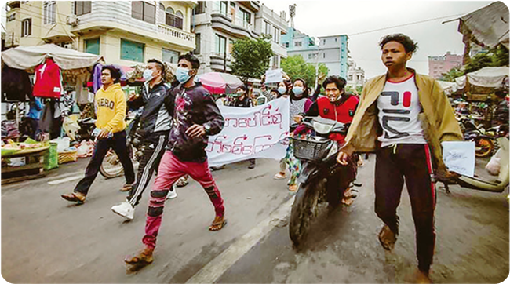

| 불복종 조건 | 예 | 아니오 |
|---|---|---|
| 행위의 목적은 정당한가?
|
|
|
| 평화로운 수단을 사용하였는가?
|
|
|
| 마지막 수단이었는가?
|
|
|
| 처벌을 감수하였는가?
|
|
활동하기 미얀마 시민의 저항은 시민불복종일까
● 미얀마 시민의 저항은 시민불복종에 해당하는지 다음 사항을 점검하고, 자신의 의견과 근거를 발표해 보자.

2021년 미얀마 전역에서 미얀마 시민은 아웅 산 수 치 국가 고문을 구금한 미얀마 군부에 대항하여 민주화 운동을 벌였다. 시민은 처음에 평화 시위를 이어 갔지만, 군부가 시위대를 총으로 무차별 학살하기 시작하자 시민 방위군을 창설하였다. 무장한 시민 방위군과 군부가 충돌하면서 미얀마는 내전에 접어들었다.
1위의 사례가 시민불복종 조건에 합당한지 다음 조건을 확인하며 생각해 보자.
2위의 점검표를 근거로 자신의 의견을 발표해 보자.
미얀마 시민의 저항도 시민불복종에 해당한다고 본다. 마지막 수단이 아니고 평화로운 수단도 아니었지만, 미얀마 군부의 기본권 침해는 매우 심각했기 때문이다.